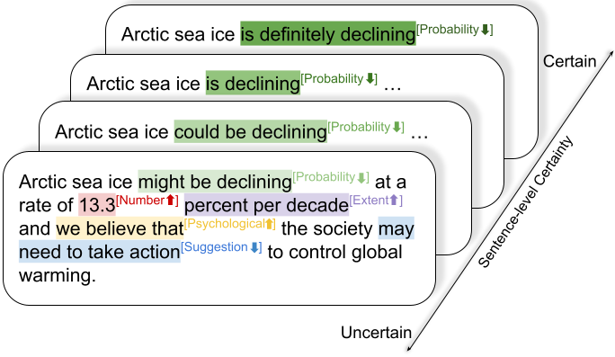

Click the figure for a better resolution.
Certainty and uncertainty are essential components of science communication. However, how to model (un)certainty has long been a challenging question in both linguistics and science communication research. This study aims to answer the following questions: (1) Are hedges a good proxy to measure certainty in scientific texts? (2) How to model certainty in science communications? (3) Does the certainty of science findings change in science communications? (4)What factors affect the certainty of scientific findings in news and abstracts?
In this study, we create (i) a new dataset and method for measuring certainty in scientific findings and (ii) an NLP model for certainty prediction. We apply this model over 431K scientific findings to study a series of research questions in science communication. Our analysis shows that 1) hedges are not able to fully capture both sentence-level and aspect-level certainty in scientific findings 2) over 6k paired findings from news and abstract, findings from news hold lower sentence-level certainty, contradicting existing studies that journalists tend to make science sounds more certain 3) findings from paper abstracts varies with journal impact and team size: low-impact journals and large teams often present scientific findings with higher sentence-level certainty. However, such a pattern does not persist in science news.
As a part of the paper, we are releasing our annotated dataset for certainty, the code and the fine-tuned model for certainty prediction, and the URLs of science news and paper abstracts used in our paper, as well as the code to extract science findings.
Please click here to read our paper on arxiv.
Getting started (Code and Models)
Our models predicting sentence-level and aspect-level ceratinty are available via simple pip.
pip3 install certainty-estimator
After installing certainty-estimator, please check out the code example to calculate both sentence-level certainty and aspect-level certainty.
Source codes and a step-by-step tutorial are available in this Github repo.
Data and code for building the certainty prediction model are also available on GitHub.
We use Hugging Face to host the pre-trained Sentence-level certainty and Aspect-level certainty models. Please check out this python file for using our models with Hugging Face transformers.
1. Annotated scientific findings
(Link)
This data contains 1551 findings labeled with sentence-level certainty and 1760 findings labeled with aspect-level certainty. The train/test/dev split used in our paper is also provided here.
2. Science news and paper abstract urls
We release the URLs of science news and paper abstracts used in our research (link).
1. Hedges are not able to fully capture both sentence-level and aspect-level certainty
Hedges are widely used as proxies for uncertainty in language. However, whether hedges are able to fully capture sentence-level and aspect-level certainty remains unclear. Based on the annotated data, our study first examines to what extent hedges can explain the variance of certainty in scientific findings. Comparing the sentence-level certainty with the number of hedges (top) shows only a moderate correlation between hedging and certainty, Pearson's r=0.55, despite their widespread use as a proxy. For example, "Further research is necessary to understand whether this is a causal relationship" contains zero hedges but explicitly expresses strong uncertainty towards the causal relationship, suggesting that many descriptions of certainty are not well captured by simple hedge-based lexicons. Further, authors vary in how frequently they employ hedges when describing the different aspects of certainty (bottom). This variance in their distribution suggests that hedges are less effective as proxies for capturing uncertainty for all aspects.
2. Aspect-level certainty have different effects on the overall sentence-level certainty.
In scientific findings, different aspects can have different certainties. Does the certainty of different aspects contribute equally to the overall perceived sentence-level certainty? The answer is no. Based on the annotated data, we calculate the relative sentence-level certainty when each aspect is certain/uncertain. As shown in the right plot, uncertainties about PROBABILITY and SUGGESTION are associated with a sharp decrease of sentence-level certainty. However, the uncertainties about NUMBER and EXTENT are only associated with a small decrease of sentence-level certainty. In short, the overall certainty of scientific findings is majorly affected by PROBABILITY and SUGGESTION, while are less affected by other aspects like NUMBER and EXTENT. This result indicates that the descriptions of aspects vary in how they contribute to the perception of the overall certainty of scientific findings.
3. Journalists may actually play down the certainty of scientific findings in science communications
Whether science news makes science sound more certain has long been an important but unanswered question. Our model allows us to examine this question over a large set of scientific findings in science communications. The regression analysis indicates that news descriptions have lower overall sentence-level certainty than abstract descriptions of the same finding (p<0.01) . Although some studies suggest that science news tends to remove hedges and describe science findings with increased certainty, our study over the paired findings finds the opposite: findings in news are less certain compared with findings in abstract, even when controlling the content and many contextual factors.
Further analysis over aspect-level certainty reveals the mechanism behind this phenomenon: Findings in abstracts are associated with more certainties about FRAMING and NUMBER. Findings in news are associated with uncertainties about PROBABILITY, EXTENT, and NUMBER, indicating that the journalists tend to play down the certainty of some aspects, especially regarding numeric information.
4. Low-impact journals often present scientific findings with higher sentence-level certainty
Journal impact factor has long been considered as one core factor associated with the quality of science. Are findings appearing in journals with different journal impact factors present certainty in different ways? The answer is yes. As shown in the right plot, findings in the lower-impact journals are written with the highest level of certainty, while findings appearing in relatively higher-impact journals are described with comparatively less certainty. One potential explanation for this phenomenon is that high-quality papers published in journals with more strict reviewing processes present certainty more precisely, which leads to a lower overall certainty compared with findings in low-impact journals. As a comparison, the certainty of findings written by journalists is not significantly associated with journal impact factors, suggesting that the prestige of a journal does not affect how journalists present scientific findings.
5. Large teams often present scientific findings with higher sentence-level certainty
In the era of team science, team size has been found to be associated with many core aspects of science, including quality and influence. Does the presentation of scientific certainty also vary with the size of the research team? The answer is yes. Using our data and model, we find a linear relationship between the number of authors and the overall level of certainty in scientific findings, even with controls for fields and authors. Multiple mechanisms may explain this behavior. Larger teams may themselves be more capable of producing more certain results due to more individuals participating and checking results or due to the scale of the experiments capable in team science. Furthermore, our result also connects to the previous finding that small teams generate new disruptive ideas while large teams tend to develop old, existing ideas, as new ideas are often associated with more uncertainties. However, this linear trend does not persist in science news; instead, the sentence-level certainty of findings in science news stays relatively steady across different numbers of authors. While team size has been found to be associated with the novelty and impact of science, our results indicate that the journalist is largely not influenced by the size of the research team in describing the certainty of their findings.
Citing the paper, data, or model
@inproceedings{pei2021measuring,
title={Measuring Sentence-level and Aspect-level (Un)certainty in Science Communications},
author={Pei, Jiaxin and Jurgens, David},
booktitle={Proceedings of the 2021 Conference on Empirical Methods in Natural Language Processing (EMNLP)},
year={2021}
}